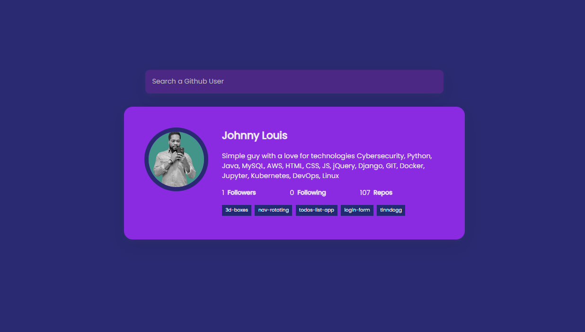

quickest way to search
In the quest to create an intuitive and visually appealing "Search for a GitHub User" feature, HTML serves as the backbone of this project, providing the necessary structure for the user interface.
With a carefully crafted style sheet, the GitHub User search feature becomes not just functional but also visually engaging. CSS is employed to define the layout, colors, fonts, and other stylistic elements, creating a cohesive and professional design. Responsive design principles are incorporated to ensure that the search feature looks and functions well across various devices and screen sizes.
JavaScript adds the dynamic and interactive elements to the "Search for a GitHub User" feature, bringing the project to life. Through the use of JavaScript, real-time search suggestions, auto-complete functionality, and asynchronous requests to the GitHub API can be implemented. The language allows for the seamless integration of interactive elements, such as loading spinners and error messages, enhancing the overall responsiveness of the search feature. JavaScript's ability to handle user input and manipulate the DOM ensures that the GitHub User search feature is not only visually appealing but also functional and user-centric. In this holistic approach, HTML, CSS, and JavaScript converge to create a robust and engaging search experience for users exploring GitHub profiles.